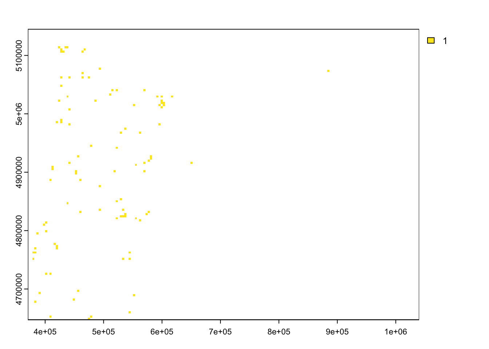

library(rgbif)Occurrence Records
Overview
- Retrieve occurrence records for Bombus sitkensis from the Global Biodiversity Information Facility (GBIF)
- Process these records along with the environmental rasters to create presence and background points to use for fitting the species distribution model
1. Use rgbif to get occurrence records
The package rgbif enables you to access GBIF’s API and request records downloads. Download requests are associated with a DOI, making them reproducible and citeable.
Load the package
Set up GBIF credentials
To download from GBIF, you need to register and supply your registration credentials. More on this here. Or you can use the account info that we’ve provided for this workshop.
Once you have your credentials ready, you need to add them to your R environment. The package usethis has a handy function that brings up the file you need to edit to do this:
library(usethis)
usethis::edit_r_environ()This will bring up a file called .Renviron. Replace your own credential information below (replace the info in quotes with your info), or you can use the account info that we will provide for this workshop. Then, copy this information into the .Renviron file and save it. You must restart your R session by going to the Session tab > Restart R.
GBIF_USER=“your_username”
GBIF_PWD=“your_password”
GBIF_EMAIL=“youremail@gbif.org”
renv::restore()- The library is already synchronized with the lockfile.library(rgbif)Get the GBIF taxon key
Although we can search GBIF using the scientific name, this can sometimes return poorly matched results if things like authorship information are missing. We can use the function rgbif::name_backbone() to identify the GBIF taxon key that will return precise taxon matches.
name_backbone("Bombus sitkensis")# A tibble: 1 × 22
usageKey scientificName canonicalName rank status confidence matchType
* <int> <chr> <chr> <chr> <chr> <int> <chr>
1 1340328 Bombus sitkensis Nyl… Bombus sitke… SPEC… ACCEP… 97 EXACT
# ℹ 15 more variables: kingdom <chr>, phylum <chr>, order <chr>, family <chr>,
# genus <chr>, species <chr>, kingdomKey <int>, phylumKey <int>,
# classKey <int>, orderKey <int>, familyKey <int>, genusKey <int>,
# speciesKey <int>, class <chr>, verbatim_name <chr>The taxon key for Bombus sitkensis is 1340328.
Set up an rgbif query
There are many query parameters available to narrow down a request for observation records. We are including a few parameters that indicate acceptable-quality data for creating robust distribution maps. These include:
- Has geographic coordinates
- Has no geospatial issues
- Has acceptable geospatial coordinate accuracy
- Represents the presence of the target organism
- Within a desired time range
- Represents a human observation
- Is within our focal geographic extent
The GBIF API has specific search terms (called ‘predicates’ in their domain-specific language) that can specify these parameters. Below we are creating variables to store these values
hasCoordinate <- TRUE
hasGeospatialIssue <- FALSE
coordinateUncertaintyInMeters <- "0,120"
occurrenceStatus <- "PRESENT"
year <- "2015,2025"
basisOfRecord <- "OBSERVATION;HUMAN_OBSERVATION;OCCURRENCE"
stateProvince <- "Oregon"
country <- "US"Now we can use the function rgbif::occ_count() to preview how many GBIF records we will return if we use these search terms.
occ_count(
taxonKey = 1340328,
hasCoordinate = hasCoordinate,
hasGeospatialIssue = hasGeospatialIssue,
coordinateUncertaintyInMeters = coordinateUncertaintyInMeters,
occurrenceStatus = occurrenceStatus,
year = year,
basisOfRecord = basisOfRecord,
stateProvince = stateProvince,
country = country
)[1] 204Make the GBIF request
Now that we know everything works, we make an actual request. We can use the function occ_download() to actually get the data. This function also returns a doi for reproducibility!
gbif_download <- occ_download(
pred("taxonKey", 1340328),
pred("hasCoordinate", hasCoordinate),
pred("hasGeospatialIssue", hasGeospatialIssue),
pred_lte("coordinateUncertaintyInMeters",120),
pred_gte("coordinateUncertaintyInMeters",0),
pred("occurrenceStatus", occurrenceStatus),
pred_gte("year", 2015),
pred_lte("year", 2025),
pred_in("basisOfRecord",c("OBSERVATION","HUMAN_OBSERVATION","OCCURRENCE")),
pred("country", country),
pred("stateProvince",stateProvince)
)We can check on the status of the download using occ_download_wait and the code provided in the output from running occ_download
occ_download_wait(gbif_download)Example output:
<<gbif download metadata>>
Status: SUCCEEDED
DOI: 10.15468/dl.jkj7fd
Format: DWCA
Download key: 0015030-251009101135966
Created: 2025-10-13T19:21:28.361+00:00
Modified: 2025-10-13T19:26:19.243+00:00
Download link: https://api.gbif.org/v1/occurrence/download/request/0015030-251009101135966.zip
Total records: 204Finally, once the download is ready, we can get the data:
occ <- occ_download_get(gbif_download) |> occ_download_import()2. Process occurence data
Load environmental and habitat rasters
The following steps require the library terra and the environmental and habitat layers from the last section. Load these if you don’t have them in your environment already.
library(terra)
prmean <- rast("data/prmean.tif")
tmean_yr <- rast("data/tmean_yr.tif")
tmax_yr <- rast("data/tmax_yr.tif")
tmin_yr <- rast("data/tmin_yr.tif")
elevcc <- rast("data/elevcc.tif")
forageFall <- rast("data/forageFall.tif")
forageSpring <- rast("data/forageSpring.tif")
forageSummer <- rast("data/forageSummer.tif")
nesting <- rast("data/nesting.tif")
insecticide <- rast("data/insecticide.tif")Rename rasters
When making these rasters, the terra package automatically generates names that aren’t always legible. Here we use the names() <- function to rename the layers to something more understandable.
# rename layers for reference
names(prmean) <- "prmean"
names(tmean_yr) <- "tmean"
names(tmax_yr) <- "tmax"
names(tmin_yr) <- "tmin"
names(elevcc) <- c("elev", "canopycov")
names(forageSpring) <- "forageSpring"
names(forageSummer) <- "forageSummer"
names(forageFall) <- "forageFall"
names(nesting) <- "nesting"
names(insecticide) <- "insecticide"Create occurrence grid for Bombus sitkensis
We use the coordinates of the GBIF observations to convert into georeferenced points using the vect function in terra.
occ.vect <- vect(occ[,c("decimalLongitude","decimalLatitude")],
geom = c("decimalLongitude","decimalLatitude"), # x and y columns
crs = "epsg:4326") # WGS 1984 geographic coordinate system
plot(occ.vect)Convert the observed points to grid cells
Using one of the environmental grids as a template, we convert the observation points from GBIF to a presence grid, where a grid cell value of 1 indicates that (any number of) observations were reported in that cell.
occ.rast <- rasterize(occ.vect |>
terra::project(prmean), # project points to match projection
prmean # template raster
)
# rename the raster layers for reference
names(occ.rast) <- "B_sitkensis"
plot(occ.rast)
Combine presence grid with environment and habitat variables and extract to table
We only need a table of presence grid cells and their associated habitat and environmental values. To do this, we can stack all the raster layers together (since they share the same projection and their grids are aligned). Then we can use the terra values function to extract the cell values of the stacked grids as rows in a table, keeping only the rows with B. sitkensis presences using the filter function from dplyr.
library(dplyr)
# stack then environmental and habitat layers and the rasterized occurence points
occ.envr <- rast(list(prmean, tmean_yr, tmax_yr, tmin_yr, elevcc, forageFall,
forageSpring, forageSummer, nesting, insecticide, occ.rast))
presence <- as.data.frame(occ.envr, xy = TRUE) |>
na.omit() # drop rows where B_sitkensis occurence is NACreate background points grid
Background samples are obtained randomly and independently of species locations. Background points are meant to sample the full environmental space available to the species of interest in the region. This means that background points:
- should be numerous enough to represent the environmental variation across the region
- may overlap with the presence points
The package predicts has a function that is useful for creating background points, backgroundSample.
library(predicts)
set.seed(100) # background sampling is random. Setting seed to 100 ensures we get the same results
backgroundpts <- backgroundSample(
mask = forageFall, # mask restricts points to area of interest (defined by the forageFall)
n = 10000, # create 10000 background points
)
background <- terra::extract(occ.envr[[1:11]], # only extracting the environmental/habitat layers
backgroundpts # extraction locations
)
# combine presence and background data
presback <- bind_rows(presence, background) |>
mutate(B_sitkensis = ifelse(is.na(B_sitkensis), 0, B_sitkensis)) # replace NA (from background data) with 0Save the output!
saveRDS(presback, "data/presback.rds")
saveRDS(occ.envr, "data/occ.envr.rds")